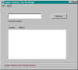

Display Tymeac Function Usage,
com.tymeac.client.jframe.TyFuncData
This frame class displays the current usage of requested Tymeac Functions.
The non-frame version of this class is TyFuncDataClient, below.
 (click to link to full image)
Elements
Function Name -- Enter any name or partial name or nothing.
A partial name of a single character: F displays all Tymeac Function beginning with the
upper case letter, F.
Nothing entered displays All Tymeac Functions.
List -- This is a List of Strings containing:
(used) -- number of times the function was used.
Name -- The full name of the function.
Buttons
REFRESH -- Refreshes or starts the display.
Message Block at bottom : -- This is an information message:
Connection failure -- The RMI connection failed or the Tymeac Server returned an
invalid message.
Tymeac shutting down -- Tymeac Server is in shut down mode.
Invalid Function Name -- No such name in the current configuration of Tymeac
Server.
Refresh or Enter a Function Name -- As indicated.
com.tymeac.client.TyFuncDataClient (JavaDoc)
This is the Non-GUI equivalent of the GUI Class, above. An example of how to use this
class is: com.tymeac.demo.TyDemoClient_FuncData.java in the
<TymeacHome>source/com/tymeac/demo directory.
Constructor 1 -- has no arguments. This is for the RMI Server. The constructor gets a
new instance of a Tymeac internal class that is similar to TySvrComm
Constructor 2-- is for the internal server. The single argument is the Tymeac
Server Interface, TymeacInterface.
Instance Methods --
public String[] refresh(String f_name)
Returns the List as mentioned, above.
Parameter is the name or partial name name of a Tymeac Function, see Function Name,
above.
| {kind=link}